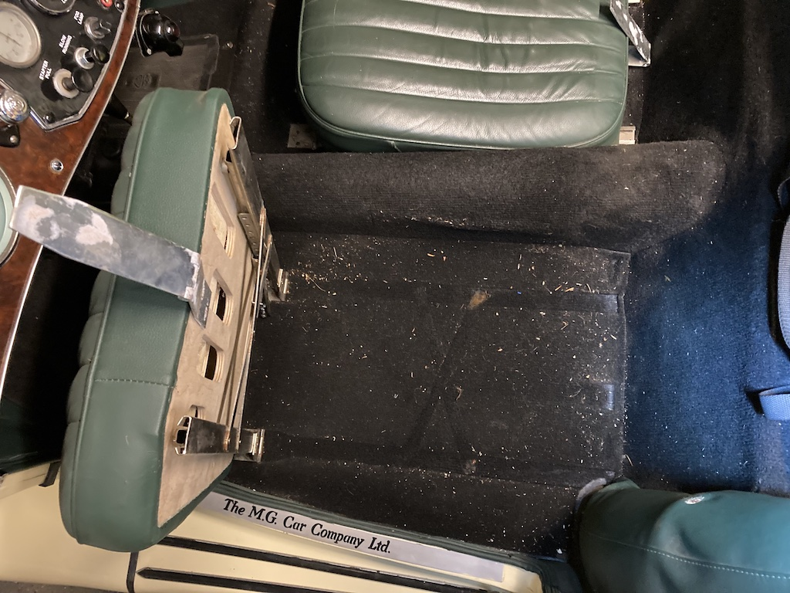
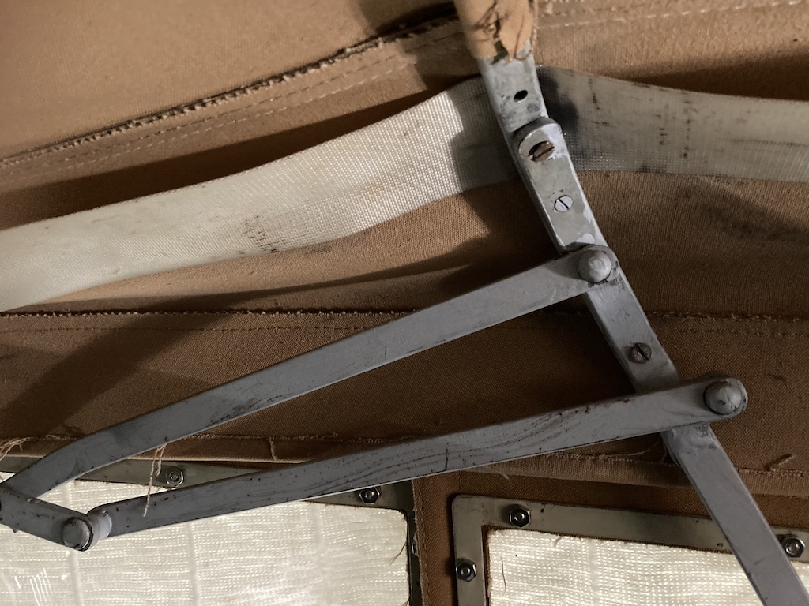

I have two problems with the hood on TC4985, one of which I have hopefully solved. Firstly, the double-duck material is too tight and so the hood frame does not open fully. This means that the hood is difficult to put up and, when it is up, the frame is not fully extended and protrudes into the door opening. So you need to mind your head when getting in and out, which is difficult enough without this incursion into the opening. Secondly, the hood leaked badly through the stitching. I've remedied this by giving it two coats of water-proofer, designed for use on tents.
This week, however, another problem with the hood materialised, actually a problem with the hood frame. On Wednesday 10th November 2021 I set off in the TC to meet up with members of the Sussex Wanderers. It was damp, with a slight drizzle, so I kept the hood up, thinking that I could lower it when I got to the pub where we were meeting. However, as soon as I set off I could hear a clattering, which seemed to be coming from the frame of the hood, over my right shoulder, and the part of the frame that drops below the line of the hood seemed to be drooping further. Also, grasping the frame seemed to partly quieten it.
When I arrived at the pub I discovered that the centre hoop of the frame had come away from the rest of the frame on that side. I decided to leave the hood up in case it would not go down or back up. This was a wise decision, since we had some more drizzle on the way to the lunch pub.
When I got home I discovered a stubby self-tapping screw in the footwell on the passenger side, which confused me, since I was expecting to find a bolt or two on the floor on the driver's side. In order to search for the missing 'bits' I removed the backrest from the seats (the first time that I had done this), which simply lifts off once the rake adjusting wing-nuts are removed. The seat squabs then hinge from the front, so I was able to firstly search under the seats and then vacuum the floor. I found one, thinner self-tapping screw. It seems that the hoops of the frame are fixed to the sides using three countersunk screws. There was only one holding the near-side of the hoop to the frame (with one on the floor) and now none on the off-side (again, with one on the floor). Clearly the thinner screw is original, since it fits the countersinking.
Luckily I was able to find some screws of the same size as the larger ones, all with slotted heads, and so put three in each side. In the photo you can just about see the two new (larger) screws and the one original screw. You can also see how the frame doesn't extend fully.
The canvas (double duck) that fits around the hoop is simply a strip that is sewn to the hood and then glued around the hoop. I don't think that the hood material should be fixed to this hoop, so as to fold it properly when lowered. I could try pulling the glued edge apart to see how it works, knowing that I could always glue it back.
© David James 2021 Last updated: 14th November 2021